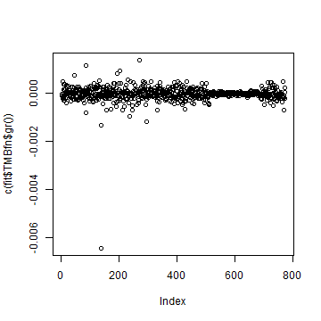
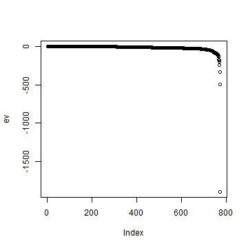
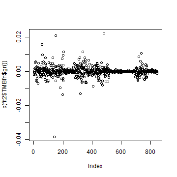
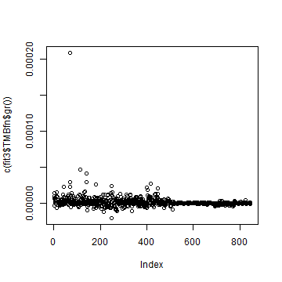
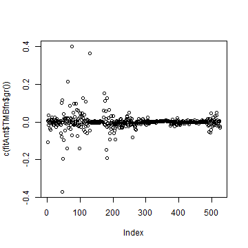
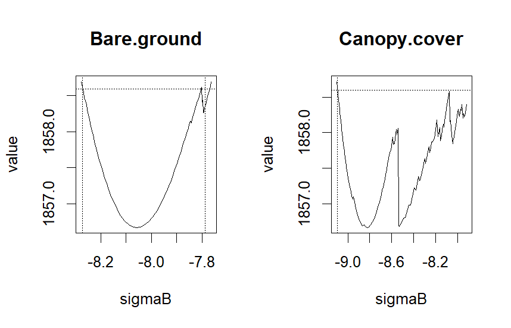

vignettes/vignette10.Rmd
vignette10.RmdIn this vignette, we demonstrate how to assess the convergence of a gllvm model. When fitting GLLVMs using gllvm, as well as with any method with any package, assessing convergence is essential to ensure reliable inference. The model need to be well converged so that the estimated parameter values are reliable and that the principles of Maximum Likelihood (ML) inference can be validly applied. We also show what steps can be taken if the initial model fails to converge.
When fitting a generalized linear latent variable model (GLLVM) using maximum likelihood (ML) estimation, the optimization algorithm iteratively searches for parameter values that maximize the log-likelihood. Convergence refers to the point at which the algorithm stops because it has (ideally) located a stable maximum.
In ML estimation, convergence is typically assessed using several criteria:
Gradient conditions: At the optimum, the gradient of the log-likelihood with respect to the parameters should be close to zero. Large gradients indicate that the algorithm stopped before reaching a maximum.
Hessian matrix: The Hessian matrix at the optimum should be negative definite, indicating that the algorithm found a local maximum rather than a saddle point. Non‑definite Hessians often signal incomplete convergence or identification problems.
Parameter stability: Parameter estimates should be reasonable and not lie at theoretical boundaries (e.g., variance parameter = 0).
Iteration behavior: The log-likelihood should ideally increase smoothly and stabilize as iterations proceed. Irregular jumps or oscillation may be a sign of instability in the optimization process. This can happen when the likelihood surface is difficult (non‑convex or with sharp curvature, multimodality, flat), the gradient or Hessian is poorly behaved or the initial values are far from the optimum.
Next we present some tools on how we can asses the convergence for gllvm models.
Below we demonstrate how to assess convergence using the gllvm package. Let’s first fit a model that we can demonstrate these things.
library(gllvm)
# Example dataset
data(beetle)
y<-beetle$Y
X<- beetle$X
X[,unlist(lapply(X, is.numeric))] = scale(X[,unlist(lapply(X, is.numeric))])
TR <- beetle$TR
TR[,unlist(lapply(TR, is.numeric))] = scale(TR[,unlist(lapply(TR, is.numeric))])
fit <- gllvm(y = y, X = X, formula = ~Management, family = "negative.binomial", num.lv = 2, seed = 123)Gradient values: Near-zero values suggest
convergence. Gradient function for the fitted model can be obtained with
fit$TMBfn$gr(). Gradient values can be checked, for
example, visually like below:

plot of chunk grad1
From the figure we can see that all gradients are close to zero, now suggesting that model is converged.
Hessian matrix condition: Hessian for log likelihood should be negative definite so that is a concave surface around . That is, negative hessian should then be positive definite and invertible, so that standard errors can be computed reliably and variances are positive, as $Cov(\hat{\boldsymbol \theta}) = \[- H(log L(\hat{\boldsymbol \theta}))\]^{-1}$. Note that, in gllvm we find the maximum by minimizing the negative log-likelihood so then things flip around and we straight get negative Hessian , which should be positive definite. Or alternatively, we need to multiply it with minus like below.
Let’s check concavity of likelihood with the Hessian
# If standard errors were calculated, negative hessian is
# already calculated and can be extracted, but for definiteness checks take minus to get Hessian:
H <- - fit$Hess$Hess.full
# But if SEs not yet calculated, for method ="VA" and method ="EVA":
H <- - fit$TMBfn$he(fit$TMBfn$par)
# And if model is fitted with method = "LA"
H <- - optimHess(fit$TMBfn$par, fit$TMBfn$fn, fit$TMBfn$gr)There are number of ways to check for negative definiteness. Some ways are more robust than others but here we present a couple of ways. In numerical optimization process, small numerical inaccuracies in Hessian due rounding errors, small non‑symmetries, or near‑singularity, are common so we can use a couple of different ways like eigenvalues or cholesky factorization as a test for negative definiteness.
First, we can check if matrix is negative definite by seeing if all eigenvalues are negative:
# Symmetrize H1 explicitly, as even tiny asymmetries can cause definiteness tests to fail:
Hsym <- 0.5 * (H + t(H))
# Calculate eigenvalues and check sign:
ev <- eigen(Hsym, symmetric = TRUE)$values
all(ev < 0)
#> [1] TRUE
max(ev)
#> [1] -0.003032225
plot(ev)
# All eigenvalues are negative -> Hessian is negative definite
plot of chunk eigencheck
One numerically stable check is to check definiteness by attempting to apply cholesky factorization to negative Hessian, which should succeed when Hessian is negative definite/ negative Hessian is positive definite.
tryCatch(
CHf <- chol(-Hsym),
error = function(e) "Not negative definite"
)
# Cholesky factorization succeeded so -H is positive definite and thus Hessian is negative definiteIf the Hessian is almost negative definite, but not exactly only due
rounding errors and other numerical reasons, one can evaluate it with
function nearPD from Matrix package to find the
closest positive semidefinite matrix for minus Hessian and then compare
it.
library(Matrix)
# Find nearest positive semidefinite matrix for -Hsym:
nH_corrected <- nearPD(-Hsym)$mat
range(-Hsym - nH_corrected)
# Hessian is negative definite and likelihood is concaveOn default, gllvm calculates standard errors, and checks if Hessian is invertible. If standard error calculation does not succeed, it indicates that there is a problem.
In addition to these checks, we also encourage to check that parameter estimates and standard errors seems reasonable. For example, theoretically extreme parameter values and standard errors of zero may be an indication of poor model fit.
Below we take a look at the estimated parameters and standard errors for the fitted model fit. Parameters look reasonable. There are few coefficients that seem a bit extreme, which can be due low number of observations of some species in this data. Also, standard errors look reasonable (note that upper diagonal of theta is fixed, that is the reason for exact zeros in their sd’s).
fit$params
#> $theta
#> LV1 LV2
#> agonfuli 1.000000000 0.00000000
#> agonmuel 0.837767809 1.00000000
#> amaraene 0.461520371 -1.28403440
#> amarapri 0.078103590 2.50729849
#> amarauli 0.181730803 1.42494621
#> amarbifo 0.716034252 3.28828304
#> amarcomm 0.278302702 1.77946330
#> amareury 0.147034359 1.92333736
#> amarfami -0.121039949 0.90831527
#> amarluni 0.002883691 1.61929358
#> amarpleb 0.770673851 2.15960961
#> anchdors -0.031944657 1.17663470
#> asapflav 0.705425516 0.72357509
#> bembaene 1.575409055 1.19604363
#> bembbrux 0.141876329 -2.20545819
#> bembgutt 0.621979991 0.40756937
#> bemblamp 0.245578965 0.37753683
#> bembmann 0.726773451 0.02570166
#> bembobtu 0.172296874 3.15882345
#> bembtetr 0.577069524 -0.68359216
#> bradharp 0.191529366 -0.38062728
#> bradrufi -0.567384489 -0.86966837
#> calafusc 0.144091494 3.33288249
#> calamela -0.214518937 0.65156832
#> calamicr -0.480248524 -0.11038005
#> caraarve -0.713948459 1.58010693
#> caraglab -0.626429386 -0.46623647
#> caragran -0.097448255 -0.01836506
#> caranemo -0.359903625 2.85922859
#> caranite -0.627975026 1.31793747
#> caraprob -0.605394774 0.64526095
#> caraviol -0.342411182 0.29384530
#> clivfoss 0.452334244 0.30322183
#> cychcara 0.114943625 0.81193647
#> dyscglob 0.543391909 -1.66057583
#> elapcupr 0.750205614 -0.87840418
#> elapulig 0.530645224 -1.79632725
#> harpaffi -0.107102982 0.31762279
#> harplatu -0.425130389 1.42817642
#> harprufi 0.253055048 1.74962991
#> leisterm -0.074810741 0.04680055
#> loripili 0.475171678 0.34968156
#> nebrbrev 0.772912144 1.82319018
#> nebrsali -0.577595596 0.91388581
#> notiaqua -0.648224660 0.80928218
#> notibigu -0.242528279 1.09654234
#> notigerm -0.625992869 0.32927085
#> notipalu -0.166903862 1.65042451
#> notisubs 0.581380447 2.95748497
#> olisrotu -0.533203128 0.76391253
#> patrassi -0.197514593 1.34509973
#> patratro 1.558888457 2.83128458
#> poecvers -0.192959022 0.07267955
#> pteradst -1.001582894 0.95929776
#> pterdili 0.057125952 0.47637736
#> ptermadi -0.355033129 3.30668790
#> ptermela 0.554313568 1.05429302
#> pternige 0.228400382 1.31080262
#> pternigr 0.656075177 0.22144698
#> pterrhae -0.011308295 -0.22917531
#> pterstre 0.924358441 -0.03019306
#> ptervern 0.849231600 -0.63850121
#> stompumi 0.460615090 2.91006622
#> synuviva 0.280867819 2.35282600
#> trecmicr 0.979401881 -0.89955321
#> trecobtu 0.166596963 -1.65141079
#> trecquad 0.309475759 0.61706911
#> trecrube 0.792462957 -0.14490312
#>
#> $sigma.lv
#> LV1 LV2
#> 2.0729210 0.7131871
#>
#> $beta0
#> agonfuli agonmuel amaraene amarapri amarauli amarbifo
#> -2.91073202 1.58112716 -2.07439516 -1.67963948 -1.43553497 -1.73012130
#> amarcomm amareury amarfami amarluni amarpleb anchdors
#> 0.08970574 -3.16706102 0.05743325 -0.46608313 2.07730443 -0.14664634
#> asapflav bembaene bembbrux bembgutt bemblamp bembmann
#> -3.70767302 -0.33260108 -2.96470608 1.70209373 2.12128204 -2.08629120
#> bembobtu bembtetr bradharp bradrufi calafusc calamela
#> -2.40249604 -1.85126302 -0.89679161 -3.49478242 3.58726959 3.52645228
#> calamicr caraarve caraglab caragran caranemo caranite
#> -2.91022436 -4.01549888 -3.68720013 -3.42244083 -1.41559816 -8.04594125
#> caraprob caraviol clivfoss cychcara dyscglob elapcupr
#> -0.41666795 -0.80609887 2.67763171 -2.40658536 -3.23299718 -2.53174440
#> elapulig harpaffi harplatu harprufi leisterm loripili
#> -7.75271612 -2.36776491 -2.00120806 -1.10011343 -0.89263253 3.24998845
#> nebrbrev nebrsali notiaqua notibigu notigerm notipalu
#> 3.57141570 0.93381837 -1.24751985 1.33004510 -3.88623566 -6.92178651
#> notisubs olisrotu patrassi patratro poecvers pteradst
#> -0.83080602 -2.59339386 -3.21741489 -2.40963672 0.23113332 -2.40962605
#> pterdili ptermadi ptermela pternige pternigr pterrhae
#> -0.48400125 3.04437825 3.19084557 3.06431646 0.30255616 -0.66058392
#> pterstre ptervern stompumi synuviva trecmicr trecobtu
#> 1.04373473 -1.27602074 -2.57674684 0.04435503 -1.70126603 1.64619177
#> trecquad trecrube
#> 2.49510657 -3.82404713
#>
#> $Xcoef
#> Management
#> agonfuli -2.43731936
#> agonmuel 1.64443222
#> amaraene 0.90065500
#> amarapri 2.43202829
#> amarauli -0.14794434
#> amarbifo 1.96522311
#> amarcomm -0.59375431
#> amareury 1.45758361
#> amarfami 1.07782921
#> amarluni -0.52583279
#> amarpleb 1.71406938
#> anchdors 2.81110126
#> asapflav 0.74755647
#> bembaene 3.65701131
#> bembbrux 2.23376557
#> bembgutt 1.74563985
#> bemblamp 1.30498873
#> bembmann -0.02356087
#> bembobtu 3.36192285
#> bembtetr 3.48605441
#> bradharp -0.92032005
#> bradrufi -0.73069630
#> calafusc 1.35864169
#> calamela 0.96035027
#> calamicr -3.49218999
#> caraarve -3.45182204
#> caraglab -2.39071026
#> caragran -3.86123107
#> caranemo 0.32017458
#> caranite -6.41717862
#> caraprob -2.35664566
#> caraviol -1.80873999
#> clivfoss 1.02224294
#> cychcara -2.55055458
#> dyscglob -3.28912305
#> elapcupr -0.96332973
#> elapulig -5.68035166
#> harpaffi 0.83431319
#> harplatu -2.00988924
#> harprufi 2.12116557
#> leisterm -2.21113138
#> loripili 0.67878804
#> nebrbrev 1.36536418
#> nebrsali -1.34551499
#> notiaqua -1.56634130
#> notibigu 0.40811840
#> notigerm -1.98757464
#> notipalu -4.37055372
#> notisubs 1.28342071
#> olisrotu -0.48989968
#> patrassi -4.98435964
#> patratro 1.23495587
#> poecvers -1.51453820
#> pteradst -1.49724554
#> pterdili -2.43306442
#> ptermadi -0.37431865
#> ptermela 2.00555529
#> pternige 0.61911357
#> pternigr -0.72646922
#> pterrhae -3.05794923
#> pterstre 0.26197204
#> ptervern 0.15484745
#> stompumi 1.33348458
#> synuviva 1.59550154
#> trecmicr 1.48983921
#> trecobtu -0.40960327
#> trecquad 2.68172282
#> trecrube -0.59971827
#>
#> $inv.phi
#> agonfuli agonmuel amaraene amarapri amarauli amarbifo amarcomm
#> 0.07961679 0.48524148 0.10686970 0.51439659 0.05394490 0.14244615 0.43898903
#> amareury amarfami amarluni amarpleb anchdors asapflav bembaene
#> 0.28759639 0.43164789 0.25655062 0.46344707 0.53159377 0.40347207 0.12581791
#> bembbrux bembgutt bemblamp bembmann bembobtu bembtetr bradharp
#> 0.11894098 0.31884436 0.24946745 0.03530924 0.07694324 0.31186033 0.10844062
#> bradrufi calafusc calamela calamicr caraarve caraglab caragran
#> 0.50165987 0.14115254 0.18420272 0.09709385 0.23345485 0.69887227 0.11265257
#> caranemo caranite caraprob caraviol clivfoss cychcara dyscglob
#> 0.06580549 0.10623581 0.63418710 0.24016392 0.69219547 0.27109900 0.04552533
#> elapcupr elapulig harpaffi harplatu harprufi leisterm loripili
#> 0.13297943 0.11178892 0.46558267 0.39283339 0.30213901 0.11923631 0.94302491
#> nebrbrev nebrsali notiaqua notibigu notigerm notipalu notisubs
#> 0.92102198 0.16100455 0.36770102 0.60749524 0.30358476 0.31078514 0.19620504
#> olisrotu patrassi patratro poecvers pteradst pterdili ptermadi
#> 0.10935610 0.23862073 0.09761954 0.04934841 0.22127126 0.17938607 0.38606473
#> ptermela pternige pternigr pterrhae pterstre ptervern stompumi
#> 0.22204844 0.31309505 0.26722119 0.25676952 0.49561601 0.32747064 0.31645909
#> synuviva trecmicr trecobtu trecquad trecrube
#> 0.40391601 0.33390763 0.10426620 0.68306486 0.21368271
#>
#> $phi
#> agonfuli agonmuel amaraene amarapri amarauli amarbifo amarcomm amareury
#> 12.560164 2.060830 9.357189 1.944025 18.537433 7.020197 2.277961 3.477095
#> amarfami amarluni amarpleb anchdors asapflav bembaene bembbrux bembgutt
#> 2.316703 3.897866 2.157744 1.881136 2.478486 7.947994 8.407531 3.136326
#> bemblamp bembmann bembobtu bembtetr bradharp bradrufi calafusc calamela
#> 4.008539 28.321195 12.996593 3.206564 9.221636 1.993383 7.084534 5.428802
#> calamicr caraarve caraglab caragran caranemo caranite caraprob caraviol
#> 10.299313 4.283484 1.430877 8.876850 15.196301 9.413022 1.576822 4.163823
#> clivfoss cychcara dyscglob elapcupr elapulig harpaffi harplatu harprufi
#> 1.444679 3.688689 21.965795 7.519960 8.945430 2.147846 2.545608 3.309735
#> leisterm loripili nebrbrev nebrsali notiaqua notibigu notigerm notipalu
#> 8.386707 1.060417 1.085750 6.211004 2.719601 1.646103 3.293973 3.217657
#> notisubs olisrotu patrassi patratro poecvers pteradst pterdili ptermadi
#> 5.096709 9.144438 4.190751 10.243851 20.264079 4.519340 5.574569 2.590239
#> ptermela pternige pternigr pterrhae pterstre ptervern stompumi synuviva
#> 4.503522 3.193918 3.742218 3.894543 2.017691 3.053709 3.159966 2.475762
#> trecmicr trecobtu trecquad trecrube
#> 2.994840 9.590835 1.463990 4.679836
fit$sd
#> $theta
#> LV1 LV2
#> agonfuli 0.0000000 0.0000000
#> agonmuel 0.3572453 0.0000000
#> amaraene 0.4324740 2.5187716
#> amarapri 0.4757138 3.1267860
#> amarauli 0.4480647 1.7618340
#> amarbifo 0.7527739 3.2740703
#> amarcomm 0.3538269 1.8985305
#> amareury 0.4507188 2.3609521
#> amarfami 0.2172873 1.3883474
#> amarluni 0.3373061 2.0906858
#> amarpleb 0.4857527 1.6920254
#> anchdors 0.2510424 1.6116139
#> asapflav 0.4535211 0.7575778
#> bembaene 0.6922553 1.2254738
#> bembbrux 0.5224786 3.1586522
#> bembgutt 0.2625319 0.5583872
#> bemblamp 0.1672008 0.4745348
#> bembmann 0.5810962 1.7980940
#> bembobtu 0.6548588 4.0599888
#> bembtetr 0.4149392 1.8932463
#> bradharp 0.2581557 0.9732227
#> bradrufi 0.3379864 0.5899299
#> calafusc 0.6675699 4.0899237
#> calamela 0.1971014 1.2489923
#> calamicr 0.2637686 0.8618619
#> caraarve 0.4557314 3.1692624
#> caraglab 0.2877429 0.5586975
#> caragran 0.2623044 0.6383333
#> caranemo 0.6119322 4.3611286
#> caranite 0.5458705 2.9484747
#> caraprob 0.2734075 1.7926400
#> caraviol 0.2330536 1.0403760
#> clivfoss 0.1865996 0.3822641
#> cychcara 0.2042124 0.9983491
#> dyscglob 0.4764319 3.2801646
#> elapcupr 0.4087661 2.4482087
#> elapulig 0.5099679 3.2971643
#> harpaffi 0.1769797 0.7590896
#> harplatu 0.3394745 2.5409698
#> harprufi 0.3524745 1.9652369
#> leisterm 0.1710353 0.6089073
#> loripili 0.1831219 0.3088544
#> nebrbrev 0.4256970 1.2386947
#> nebrsali 0.3171096 2.1198270
#> notiaqua 0.3083089 2.0863977
#> notibigu 0.2304660 1.8522379
#> notigerm 0.3161844 1.4260370
#> notipalu 0.4067044 2.5309468
#> notisubs 0.6031741 3.1811310
#> olisrotu 0.3442642 1.9517944
#> patrassi 0.2984194 2.1197482
#> patratro 0.8262774 1.8159808
#> poecvers 0.3376939 1.3048456
#> pteradst 0.4787786 2.8366450
#> pterdili 0.1615696 0.6981362
#> ptermadi 0.6273742 4.7627395
#> ptermela 0.3212001 0.7115682
#> pternige 0.2845555 1.4121102
#> pternigr 0.2757114 0.8647170
#> pterrhae 0.1567465 0.5089028
#> pterstre 0.3498252 1.4814495
#> ptervern 0.3691794 2.1300230
#> stompumi 0.5561962 3.1780419
#> synuviva 0.4724751 2.6221758
#> trecmicr 0.4498568 2.6679876
#> trecobtu 0.3454821 2.4549210
#> trecquad 0.1770213 0.4248561
#> trecrube 0.4490405 1.6207675
#>
#> $sigma.lv
#> LV1 LV2
#> 0.7472580 0.9205463
#>
#> $beta0
#> agonfuli agonmuel amaraene amarapri amarauli amarbifo amarcomm amareury
#> 1.0788577 0.3065224 0.6450899 0.4900325 0.5882312 0.7944274 0.2865892 0.7296114
#> amarfami amarluni amarpleb anchdors asapflav bembaene bembbrux bembgutt
#> 0.2336511 0.3259435 0.3389285 0.3425874 0.9537581 0.9073044 0.8237428 0.2833849
#> bemblamp bembmann bembobtu bembtetr bradharp bradrufi calafusc calamela
#> 0.2358420 0.7666061 1.1041526 0.8071705 0.3921754 0.7502587 0.4780063 0.2655772
#> calamicr caraarve caraglab caragran caranemo caranite caraprob caraviol
#> 1.1524608 1.3565654 1.1153224 1.2906133 0.7700233 3.7033704 0.3439890 0.3807160
#> clivfoss cychcara dyscglob elapcupr elapulig harpaffi harplatu harprufi
#> 0.1804334 0.7067461 1.6108533 0.6688677 3.3263306 0.4335730 0.5158648 0.4464200
#> leisterm loripili nebrbrev nebrsali notiaqua notibigu notigerm notipalu
#> 0.4949678 0.1672588 0.2694573 0.3590955 0.4162618 0.1993556 1.2077920 2.8233101
#> notisubs olisrotu patrassi patratro poecvers pteradst pterdili ptermadi
#> 0.5975173 0.6946254 1.1885786 0.9729082 0.5171863 0.6622074 0.4095565 0.3820023
#> ptermela pternige pternigr pterrhae pterstre ptervern stompumi synuviva
#> 0.3063155 0.2421468 0.3083133 0.4564679 0.3047889 0.4243951 0.6190257 0.3776050
#> trecmicr trecobtu trecquad trecrube
#> 0.5911951 0.3958342 0.1921701 0.9339136
#>
#> $Xcoef
#> Management
#> agonfuli 1.1192656
#> agonmuel 0.3143687
#> amaraene 0.6017843
#> amarapri 0.4664815
#> amarauli 0.7132842
#> amarbifo 0.7879731
#> amarcomm 0.2937330
#> amareury 0.6213316
#> amarfami 0.2408062
#> amarluni 0.3180894
#> amarpleb 0.3505023
#> anchdors 0.3314318
#> asapflav 0.7794814
#> bembaene 0.7620770
#> bembbrux 0.7178404
#> bembgutt 0.2801436
#> bemblamp 0.2402252
#> bembmann 0.9396096
#> bembobtu 1.2584397
#> bembtetr 0.6965476
#> bradharp 0.5055923
#> bradrufi 0.5809252
#> calafusc 0.4803123
#> calamela 0.3490400
#> calamicr 1.1089740
#> caraarve 1.1586275
#> caraglab 0.8920396
#> caragran 1.3889865
#> caranemo 0.6967339
#> caranite 3.2705784
#> caraprob 0.3303783
#> caraviol 0.3835400
#> clivfoss 0.1919262
#> cychcara 0.6737503
#> dyscglob 1.9006425
#> elapcupr 0.5832024
#> elapulig 2.8420646
#> harpaffi 0.4239000
#> harplatu 0.4860779
#> harprufi 0.4509791
#> leisterm 0.4693189
#> loripili 0.1631488
#> nebrbrev 0.2699875
#> nebrsali 0.3340496
#> notiaqua 0.4044517
#> notibigu 0.1867114
#> notigerm 1.0421581
#> notipalu 2.2460571
#> notisubs 0.5572713
#> olisrotu 0.6286056
#> patrassi 1.2002830
#> patratro 0.8341210
#> poecvers 0.7430597
#> pteradst 0.5625847
#> pterdili 0.4637642
#> ptermadi 0.3582384
#> ptermela 0.3077618
#> pternige 0.2312864
#> pternigr 0.3169564
#> pterrhae 0.4896053
#> pterstre 0.3097579
#> ptervern 0.3920285
#> stompumi 0.5139202
#> synuviva 0.3398721
#> trecmicr 0.5421705
#> trecobtu 0.3795949
#> trecquad 0.2136039
#> trecrube 0.7403021
#>
#> $inv.phi
#> agonfuli agonmuel amaraene amarapri amarauli amarbifo amarcomm
#> 0.03813294 0.09813205 0.05817473 0.15833792 0.02685390 0.04924555 0.11508654
#> amareury amarfami amarluni amarpleb anchdors asapflav bembaene
#> 0.18125373 0.11462173 0.08079717 0.08879735 0.13862101 0.32446154 0.03253902
#> bembbrux bembgutt bemblamp bembmann bembobtu bembtetr bradharp
#> 0.05610365 0.06274436 0.04495052 0.02154673 0.02916814 0.09503122 0.04123043
#> bradrufi calafusc calamela calamicr caraarve caraglab caragran
#> 0.36372438 0.02702216 0.03097815 0.03896507 0.09085503 0.35623632 0.04605532
#> caranemo caranite caraprob caraviol clivfoss cychcara dyscglob
#> 0.02846483 0.05804580 0.18239506 0.07508526 0.12548720 0.11201795 0.02339661
#> elapcupr elapulig harpaffi harplatu harprufi leisterm loripili
#> 0.07125151 0.06978114 0.45068375 0.13940414 0.08962128 0.03983867 0.16947129
#> nebrbrev nebrsali notiaqua notibigu notigerm notipalu notisubs
#> 0.17600159 0.03971283 0.12884706 0.13612827 0.18017768 0.23932716 0.06193837
#> olisrotu patrassi patratro poecvers pteradst pterdili ptermadi
#> 0.08645156 0.06963487 0.03610458 0.01651042 0.08640114 0.04889716 0.07964027
#> ptermela pternige pternigr pterrhae pterstre ptervern stompumi
#> 0.04038486 0.04859116 0.06911433 0.06593244 0.11268238 0.12274321 0.13578305
#> synuviva trecmicr trecobtu trecquad trecrube
#> 0.10181767 0.11901413 0.02394097 0.12844643 0.16497471
#>
#> $phi
#> agonfuli agonmuel amaraene amarapri amarauli amarbifo amarcomm
#> 6.0157660 0.4167686 5.0936040 0.5983961 9.2279789 2.4269765 0.5971964
#> amareury amarfami amarluni amarpleb anchdors asapflav bembaene
#> 2.1913922 0.6151878 1.2275805 0.4134279 0.4905342 1.9931330 2.0555096
#> bembbrux bembgutt bemblamp bembmann bembobtu bembtetr bradharp
#> 3.9657747 0.6171876 0.7222822 17.2824227 4.9268316 0.9771158 3.5061772
#> bradrufi calafusc calamela calamicr caraarve caraglab caragran
#> 1.4452856 1.3562591 0.9129844 4.1332534 1.6670291 0.7293611 3.6290890
#> caranemo caranite caraprob caraviol clivfoss cychcara dyscglob
#> 6.5733142 5.1431463 0.4535010 1.3017848 0.2619039 1.5241643 11.2887761
#> elapcupr elapulig harpaffi harplatu harprufi leisterm loripili
#> 4.0292586 5.5839373 2.0791139 0.9033559 0.9817424 2.8021269 0.1905679
#> nebrbrev nebrsali notiaqua notibigu notigerm notipalu notisubs
#> 0.2074802 1.5319849 0.9529823 0.3688609 1.9549743 2.4778299 1.6089384
#> olisrotu patrassi patratro poecvers pteradst pterdili ptermadi
#> 7.2291431 1.2229548 3.7886881 6.7797223 1.7646942 1.5195194 0.5343336
#> ptermela pternige pternigr pterrhae pterstre ptervern stompumi
#> 0.8190740 0.4956840 0.9678907 1.0000282 0.4587387 1.1445973 1.3558461
#> synuviva trecmicr trecobtu trecquad trecrube
#> 0.6240811 1.0674458 2.2021892 0.2752949 3.6130887Iteration behavior can be traced during optimization process with
trace and optimizer.trace. One can trace the
maximum gradien evaluation during optimization in each iteration by
setting trace = TRUE. The progress of the (minus)
log-likelihood value can be traced with
optimizer.trace = 1. This argument is passed to the
optimizer, and it can also print additional information, eg. parameter
values during iterations depending on the optimizer used.
As a conclusion:
Small gradient values and a negative-definite, invertible Hessian indicate that the model has likely converged.
Instead, large gradients or a singular (non‑invertible) Hessian indicate that convergence was likely not achieved, for example due bad starting values, or that there are identification problems. which may stem from an ill‑behaved likelihood function — for example, a flat likelihood surface, multimodality, ridges in the likelihood, or near‑collinearity among parameters.
Let’s consider next what can be done if problems arise and how to identify the possible problematic parameters or reasons causing the challenges in the optimization eg. the problematic shape of likelihood function.
Non-convergence may arise from number of reasons like poor initial values, overly complex models, scaling issues, or unsuitable optimization settings. The gllvm package allows several adjustments. Let’s look at an example; add random slopes for env covariates to adjust species specific responses to environment.
# Fit a fourth corner GLLVM with random slopes and two latent variables
fit2 <- gllvm(y = y, X = X, TR = TR, num.lv = 2,
formula =~ Management*LPW + (0 + Management|1),
family = "negative.binomial", seed = 123)
# Relative convergence was reached
fit2$convergence
#> [1] TRUE
# Gradients are quite small, although some around 0.04:
plot(c(fit2$TMBfn$gr()))
# HEssian is not negative definite:
H1 <- -fit2$Hess$Hess.full
Hsym <- 0.5 * (H1 + t(H1))
# Calculate eigenvalues and check sign:
ev <- eigen(Hsym, symmetric = TRUE)$values
all(ev < 0)
#> [1] FALSE
# Hessian is not negative definite and likelihood is not concave
plot of chunk ex2
So convergence is not very good. Let’s look at options what can be done.
In gllvm, the optimizer argument controls the numerical
optimizer to be used. Possible options currently include
optim and nlminb, and for ordination with
predictors (num.RR>0 or num.lv.c>0) also
alabama(default), nloptr(agl) or
nloptr(sqp). Changing the algorithm may sometimes help to
find good optimum more easily.
Usually numerical optimization algorithms use relative convergence of
the function to be maximized as a criteria for the convergence. It means
that the optimization stops when the change (in the log‑likelihood)
becomes sufficiently small relative to the value from the previous
iteration. In gllvm the relative convergence criteria is defined by
reltol and the default is 1e-10.
We can check if the optimization algorithm reached the relative convergence:
fit2$convergence
#> [1] TRUEIf relative convergence was not reached, gllvm throws a warning indicating this.
In case maximum number of iterations was reached, it can be increased
with maxit and/or max.iter:
optim: maxit is passed to
optim()’s maxit to control the maximum number of
iterations.nlminb: maxit is passed to
nlminb()’s eval.max to control maximum number
of evaluations of the objective function and max.iter to
nlminb()’s iter.max to control maximum number
of iterationsFor the previous model default relative convergence was reached with the given maximum number of iterations, but maybe that was not enough for this model, so make the criteria smaller:
fit3 <- gllvm(y = y, X = X, TR, num.lv = 2,
formula =~ Management*LPW + (0 + Management|1),
family = "negative.binomial", seed = 123, reltol = 1e-14)
# Relative convergence was reached
fit3$convergence
#> [1] TRUE
# Gradients are now smaller:
plot(c(fit3$TMBfn$gr()))
# check Hessian for negative definiteness:
H1 <- - fit3$Hess$Hess.full
Hsym <- 0.5 * (H1 + t(H1))
ev <- eigen(Hsym, symmetric = TRUE)$values
all(ev < 0)
#> [1] TRUE
# All eigenvalues are negative so Hessian is negative definite:
plot of chunk ex2reltol
This time stricter relative convergence criteria did help with the gradients and hessian is now also negative definite, so seems like better convergence and maximum for the log-likelihood was reached.
Poor initial values can trap the optimizer in local optima. You can
modify starting values for gllvm in a number of ways. Firstly, in gllvm
there are three main procedures to generate starting values for the
model to be fitted, and which can be modified with argument
starting.val. The options are:
starting.val = "res": uses parameters of multivariate
glm as starting values for fixed effects, and then generates starting
values for latent variables with factor analysis based on residuals of
the glm. Each factor analysis calculation produces slightly different
starting values as the residuals are calculated as randomized quantile
residuals.starting.val = "random": uses parameters of
multivariate glm as starting values for fixed effects, and then randomly
generates starting values for latent variables.starting.val = "zero": uses zeros as starting values
for fixed effects, random effects and latent variables, (except variance
terms appropriate starting values are fixed to suitable value).In addition to these, it is always recommended to use multiple
initial runs with different starting points with
n.init.
Repeating the estimation with different random starts can also reveal whether the solution is stable.
In addition, there are several other ways to modify starting values.
For example, one can use another already fitted model as starting value
point with start.fit (with some restrictions), generate
additional random variation to the starting values with
jitter.var and jitter.var.br. Starting values
for some specific parameters, like range parameter in spatial models and
zetacutoff parameters for orderd beta models can be given freely.
There are alternative approximation methods implemented in the
gllvm package, and switching the method can stabilize
convergence. The options are controlled with method an
are:
method = "VA" Variational approximation (default)method = "EVA" Extended Variational approximationmethod = "LA" Laplace approximationThere are some differences in for which distributions and link functions these method’s can be applied, the table of these can be found in the Vignette 1: ‘Analysing multivariate abundance data using gllvm’.
In addition, research has shown that some methods for some distributions and models may work better and produce better behaved likelihood function, and others may have certain problems, see for example discussion about VA’s underestimation of variance for random effects.
In case variational or extended variational approximation is used, there are different options for the variational covariance structure to be used. Simplest possible structure is diagonal covariance and most complex is unstructured covariance. However, depending on the random effect term and model, there are also options in between the most complex and most simple and the covariance structure can be modified.
Lambda.struc: covariance structure of VA
distributions for latent variables can be "unstructured"
(default) or "diagonal", or in case correlated latent
variables are used, also "bdNN" and "UNN" can
be used.
Ab.struct: covariance structure of VA distributions
for random slopes, ordered in terms of complexity:
"diagonal", "MNdiagonal" (only with colMat),
"blockdiagonal" (default without colMat),
"MNunstructured" (default, only with colMat),
"diagonalCL1" ,"CL1" (only with colMat),
"CL2" (only with colMat),"diagonalCL2" (only
with colMat), or "unstructured" (only with
colMat).
Ar.struc: covariance structure of VA distributions
for random row effects: "unstructured" or
"diagonal". Defaults to "diagonal".
"Unstructured" is block diagonal for ordinary random
effects.
In optimization, there is also an option to optimize the model in
two-step procedure, where the model is first optimized with simpler
diagonal variational covariance, and using those estimates as starting
values, the fit the model with more complex variational covariance
structure. These can be controlled with diag.iter and
Ab.diag.iter
If the optimization process did not succeed, eg. it ends up with large gradients, parameter values on the edge, non negative definite hessian or does not converge even if number of iterations is large, finding the problematic parameters may help with identifying the reasons behind bad convergence. Profiling the shape of the likelihood can also give insight.
When identifying the problematic parameters one can look for example parameter estimates:
or alternatively one can take a look at: * gradients: which parameters has large gradients still at the end * standard errors: eg. parameters with “negative variance” (in inverse of hessian), or parameters with almost zero standard error even though data would be small
Let’s look at the next example:
data(antTraits, package = "mvabund")
ya = antTraits$abund
Xa = scale(antTraits$env)
TRa = antTraits$traits
TRa[,unlist(lapply(TRa, is.numeric))] = scale(TRa[,unlist(lapply(TRa, is.numeric))])
# Fit a fourth corner GLLVM with two latent variables
fitAnt <- gllvm(y = ya, X = Xa, TR = TRa, num.lv = 2,
formula = ~(Bare.ground + Canopy.cover)*Femur.length +
(0 + Bare.ground + Canopy.cover|1),
family = "negative.binomial", n.init=3, seed = 123)
fitAnt$convergence
#> [1] TRUE
# Some gradients are quite large
plot(c(fitAnt$TMBfn$gr()))
# Hessian is not negative definite:
H1 <- - fitAnt$Hess$Hess.full
Hsym <- 0.5 * (H1 + t(H1))
ev <- eigen(Hsym, symmetric = TRUE)$values
all(ev < 0)
#> [1] FALSE
# See which parameters have largest gradients
table(names(fitAnt$TMBfn$par[abs(c(fitAnt$TMBfn$gr()))>0.1]))
#>
#> b B Br lambda sigmaLV
#> 1 3 7 5 1
# B refers to fixed coefficients (fourth corner), Br random slopes, sigmaLV diagonal scaling parameter in loading matrix and lambda other loading parameters
# Look for extremes and parameters at theoretical boundary, eg.:
fitAnt$params[c("sigma.lv", "B", "phi", "sigmaB")]
#> $sigma.lv
#> LV1 LV2
#> 0.03570092 2.93901760
#>
#> $B
#> Bare.ground Canopy.cover Femur.length
#> 0.23730529 0.16335188 0.11901798
#> Bare.ground:Femur.length Canopy.cover:Femur.length
#> 0.03005463 -0.20594212
#>
#> $phi
#> Amblyopone.australis Aphaenogaster.longiceps
#> 4.58437666 2.59539538
#> Camponotus.cinereus.amperei Camponotus.claripes
#> 0.88803002 0.79104547
#> Camponotus.consobrinus Camponotus.nigriceps
#> 0.57344576 3.94279588
#> Camponotus.nigroaeneus Cardiocondyla.nuda.atalanta
#> 0.97930032 5.80868620
#> Crematogaster.sp..A Heteroponera.sp..A
#> 4.22165897 0.53993550
#> Iridomyrmex.bicknelli Iridomyrmex.dromus
#> 0.40510477 3.60992569
#> Iridomyrmex.mjobergi Iridomyrmex.purpureus
#> 0.46385810 4.69575877
#> Iridomyrmex.rufoniger Iridomyrmex.suchieri
#> 0.11363043 0.78803584
#> Iridomyrmex.suchieroides Melophorus.sp..E
#> 0.52182315 0.94416950
#> Melophorus.sp..F Melophorus.sp..H
#> 0.43572531 0.56694903
#> Meranoplus.sp..A Monomorium.leae
#> 3.35133398 0.97995036
#> Monomorium.rothsteini Monomorium.sydneyense
#> 0.53236690 1.54610655
#> Myrmecia.pilosula.complex Notoncus.capitatus
#> 2.46784075 5.78667102
#> Notoncus.ectatommoides Nylanderia.sp..A
#> 0.42105524 1.23189219
#> Ochetellus.glaber Paraparatrechina.sp..B
#> 2.32410415 8.07236751
#> Pheidole.sp..A Pheidole.sp..B
#> 0.06138527 1.93098742
#> Pheidole.sp..E Pheidole.sp..J
#> 0.74937411 4.43042636
#> Polyrhachis.sp..A Rhytidoponera.metallica.sp..A
#> 0.31143396 0.20357015
#> Rhytidoponera.sp..B Solenopsis.sp..A
#> 1.72241349 0.82275587
#> Stigmacros.sp..A Tapinoma.sp..A
#> 1.46339919 0.91412757
#> Tetramorium.sp..A
#> 0.61201003
#>
#> $sigmaB
#> Bare.ground Canopy.cover
#> Bare.ground 1.002563e-07 -1.595587e-08
#> Canopy.cover -1.595587e-08 2.174267e-08
# For example, variances for random slopes in sigmaB are close to zero
#Look for "negative variances":
sum(diag(fitAnt$Hess$cov.mat.mod)<0)
#> [1] 55
(fitAnt$TMBfn$par[fitAnt$Hess$incl])[(diag(fitAnt$Hess$cov.mat.mod)<0)]
#> sigmaLV lambda lambda lambda lambda
#> -2.939017597 37.277876483 -7.548098679 -0.208650756 14.424832344
#> lambda lambda lambda lambda lambda
#> -3.350201501 -21.451504675 -20.575424114 -14.744403460 -7.484899207
#> lambda lambda lambda lambda lambda
#> -20.655719211 -0.070936022 12.016846627 -4.538485283 1.759055991
#> lambda lambda lambda lambda lambda
#> -11.776694095 7.550566659 -10.493590390 20.396136709 3.471411060
#> lambda lambda lambda lambda lambda
#> -15.124219958 1.845136944 0.321068452 0.208260555 -0.077917847
#> lambda lambda lambda lambda lambda
#> 0.183468373 -0.769367361 0.841669924 0.246964211 -0.134442932
#> lambda lambda lambda lambda lambda
#> 0.493581114 -0.182404949 -0.332339654 -0.242733409 -0.357891358
#> lambda lambda lambda lambda lambda
#> -0.365832221 0.083293342 -0.727839039 -0.455530847 0.356732798
#> lambda lambda lambda lambda lambda
#> -0.255515712 -0.412666062 -0.024596387 -0.169648449 0.132403415
#> lambda lambda lambda lambda lambda
#> -0.036653934 0.052331886 -0.020231849 -0.204588323 -0.357623031
#> lambda lambda lambda lambda sigmaij
#> -0.214005007 0.002040557 -0.094585447 -0.484310801 -0.363644404
# There are lot of "negative variances", which can be a result from non negative Hessian
plot of chunk identifypar
Profiling the likelihood shape with TMB::tmbprofile for
these problematic parameter can give insight on the problem. Well shaped
likelihood is smooth around the maximum.
# Let's profile the likelihood for (log) variances of random slopes:
parProblem <- fitAnt$TMBfn$par[names(fitAnt$TMBfn$par) == "sigmaB"]
parProblem
#> sigmaB sigmaB
#> -8.057768 -8.821995
# Find the index of the log-variance of species specific slope for Bare.ground
(parNO1 <- which(fitAnt$TMBfn$par == parProblem[1]))
#> sigmaB
#> 311
# Draw a profile of the likelihood with respect to this parameter:
par1prof <- TMB::tmbprofile(fitAnt$TMBfn,parNO1, h=1e-3, parm.range = c(-12,-1), trace = FALSE)
# Find the index of the log-variance of species specific slope for Canopy.cover:
(parNO2 <- which(fitAnt$TMBfn$par == parProblem[2]))
#> sigmaB
#> 312
# Draw a profile of the likelihood with respect to this parameter:
par2prof <- TMB::tmbprofile(fitAnt$TMBfn,parNO2, h=1e-3, parm.range = c(-12,-1), trace = FALSE)
par(mfrow=c(1,2))
plot(par1prof,main = "Bare.ground")
plot(par2prof,main = "Canopy.cover")
plot of chunk profilelogL
Above, the negative log-likelihood is mostly well shaped with respect
to the log-variance of random slope Bare.ground. For the
random slope variance of Canopy.cover, the curvature is not
clean but rather jagged and non‑smooth, with irregular sharp jumps. This
behaviour is common when the log‑variance enters a region where the
random slope variance is near zero, which can introduce instability and
complicate the optimization process.
The above is an example of a situation where the likelihood is not well-shaped, or where the algorithm has wandered into a region where the curvature is problematic. Some of the common reasons for such behaviour include:
Complex models are harder to optimize. If non of the previous steps do help, and maybe profiling the likelihood also suggest it, it might be that the model you are trying to fit, is not suitable to the data or that there is not enough information in the data to estimate the parameters of the model.
A number of options can then be tried with consideration, to modify or simplify the model.
Options include, for example:
disp.formula
TMB::tmbprofile may also help in identifying this
problem.